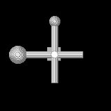

| .OPERATION | OR 3Q [phi],[the],[psi],[cc] | ; Orientation search - 3D |
| .REFERENCE VOLUME: | sav_vol_ax_pd | ; Rotated volume (input) |
| .EXPERIMENTAL VOLUME: | rot_vol_ax_pd | ; Experimental volume (input) |
| .MASK RADIUS: | 70 | ; Mask radius |
| .CENTER OF ROTATION IN X,Y,Z: | 30 30 30 | ; Rotation around 30,30,30 |
| .INITIAL EULERIAN ANGLES; PHI,THETA,PSI: | 0, 0, 0 | ; Initial Eulerian angles |
| INPUT REFERENCE VOLUME (Surface) | INPUT EXPERIMENTAL VOLUME (Surface) |
|---|---|
|  | |
| vol_ax_160_surf | rot_vol_ax_160_surf |
| 'OR 3Q' RESULTS FILE |
|---|
| or3q_resu |